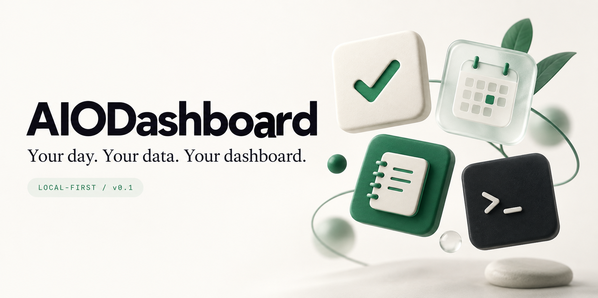
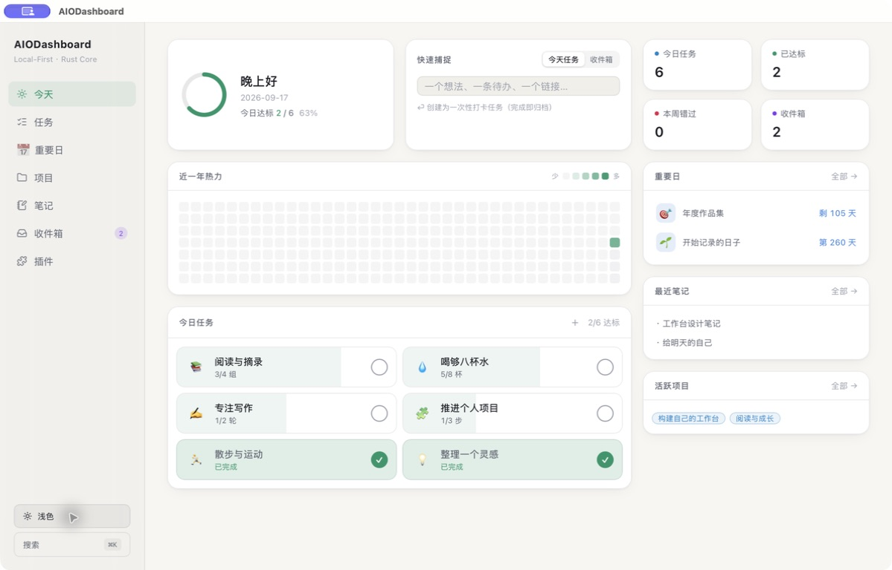

每一步，都算数。
为习惯设定次数与循环。打卡、撤销、看周月年总览，让进步留下痕迹。
v0.1.0 · 为 macOS 而来
任务、重要日和一闪而过的灵感。
在一个本地工作台里，慢慢变成看得见的进步。
Apple Silicon · 无需账号 · MIT 开源

01 数据留在自己电脑
02 界面与命令行并行
03 随自己的需求扩展
A SPACE FOR YOUR DAY
今天的进度、长期的积累，
在同一个视野里。

真实发行构建截图 · 使用隔离的演示数据。品牌封面为 AI 生成的概念视觉。
SMALL ACTIONS, VISIBLE PROGRESS
为习惯设定次数与循环。打卡、撤销、看周月年总览，让进步留下痕迹。
倒计时连接接下来的目标，纪念日保留走过的时间。将相关任务归在一起。
想法先放进收件箱，再转为任务或笔记。需要的时候，按 ⌘K 找回来。
MADE TO BE YOURS
从自己的需求出发，编写一个专属插件。
导入、审阅权限、启用，让常用工具留在手边。
当前为 Trusted WebView，仅运行可信插件。权限检查不等于进程级沙箱。
# 和界面使用同一份本地数据 $ dashboard context today --json # 把 AI 的操作留下记录 $ DASHBOARD_ACTOR=ai dashboard \ task create --title "每周回顾" --json # 查看 AI 创建的活动 $ dashboard activity list --actor ai --json
Rust Core · SQLite · 可审计的操作来源
START LOCAL. MAKE IT PERSONAL.
v0.1.0 是一个起点。先把工作台用起来，再把它变成自己的样子。
本次提供 Apple Silicon 构建，未经过 Apple 公证。安装说明与 SHA-256 校验见发行页。
尚不包含云同步、内置 AI 聊天或原生 WidgetKit 小组件。